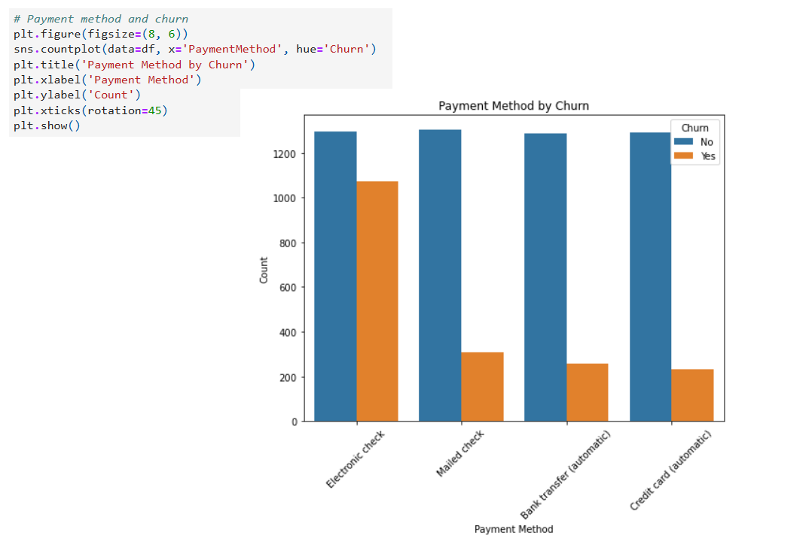
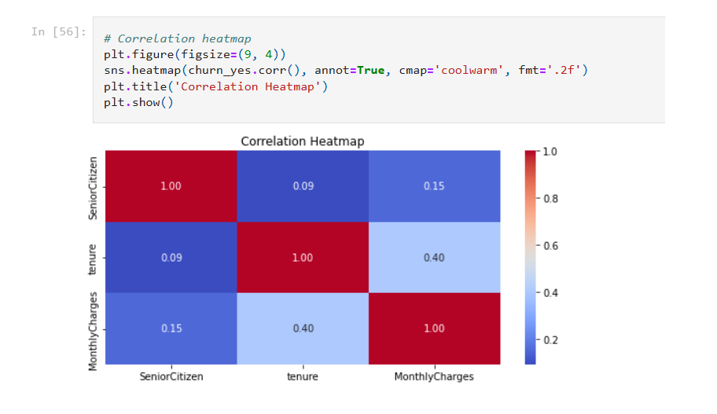
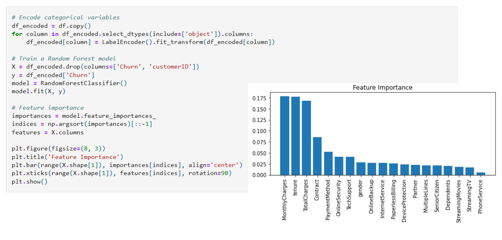

Project description
Customer churn is one of the main challenges in the telecommunications industry. The goal of this project was a detailed analysis of customer data – demographics, subscription history, service preferences and payment methods – in the context of the decision to cancel services. The analysis was done in Python using Jupyter Notebook, with data exploration and modelling techniques. The main aim was to identify the key factors that influence customers' decisions to leave, which made it possible to extract important patterns and understand the dynamics of the phenomenon. The conclusions can be a basis for effective strategies to increase customer loyalty and retention in the telecommunications industry.
The analysis with a description and the Python code is available in the GitHub repository.

What I did
- Loading and initial exploration – the dataset was loaded into a Pandas DataFrame (a two-dimensional data structure similar to a database table or an Excel sheet). I checked the structure of the data, including its size, column names and basic statistics, to get a general picture of the dataset.
- Cleaning and completeness check – the data was checked for missing values and irregularities.
- Data analysis – to better understand the data and the factors that may matter for the decision to leave, I analysed:
- customer distribution – the share of customers who left and who stayed, to understand their proportion in the dataset
- gender distribution
- payment preferences vs. churn
- tenure distribution – whether the length of service use affects churn
- type of internet service customers use
- contract types vs. churn
- charges vs. churn
- use of specific internet and phone services in the context of churn
- Correlation heatmap – I analysed correlations between numerical features to understand relationships between variables. A correlation heatmap visualises them, making it easy to spot strong and weak correlations between attributes such as charges and customer tenure. I used Pearson correlation, which is suited to numerical variables with a distribution close to normal. The analysis helps show which features influence the others most and gives hints for the next direction of analysis.

Fig. 2. Heatmap of correlations between variables. - Feature importance with Random Forest – to further assess which features most influence the decision to leave, I analysed feature importance with the Random Forest algorithm, which works with both numerical and non-numerical features. The algorithm made it possible to assess how individual variables influence the prediction of churn, and to identify the key factors with the greatest impact on the decision to cancel.

Fig. 3. Feature importance results from the Random Forest algorithm.
Why Python and Jupyter Notebook
Python is one of the most powerful tools in data analysis, offering a wide range of libraries such as Pandas, NumPy, Scikit-learn or TensorFlow, which support the whole process of data analysis, statistical modelling and machine learning. Its flexibility makes it possible to manipulate and clean data and to create charts and reports.
Jupyter Notebook supports this process very well, offering an interactive environment for easy experimentation with data and models. Thanks to live monitoring of results, documenting code, adding visualisations and iterative testing of models, Jupyter is an ideal tool for this kind of analysis, helping present the results clearly and understandably.
Data source
Kaggle dataset: Telco Customer Churn.